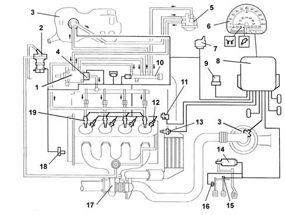

Introduction - DIESEL FUEL INJECTION
- Path
- Descriptions > 10 ENGINE UNIT > 1060 DIESEL FUEL INJECTION > Introduction - DIESEL FUEL INJECTION
- Kind
- system description
- Applies to
- engines: 1.9 JTD 8V; all production periods
- Interactive page
- https://sloeber94.github.io/elrnDB-fMltpl/en/#/2892430
Applies to: engines: 1.9 JTD 8V; all production periods
VIEW OF ASSEMBLY
-

1, Pressure pump 2, EGR modulating solenoid valve 3, Fuel tank 4, Pressure regulator 5, Fuel filter 6, On board instruments 7, Heater plugs electronic control unit 8, Electronic control unit 9, System relay feed 10, Distribution manifold (rail) 11, Rpm and T.D.C. sensor 12, Heater plug 13, Coolant temperature sensor 14, Accelerator pedal potentiometer 15, Brake pedal switch 16, Switch on clutch pedal 17, Turbocharger 18, Timing sensor 19, Injectors